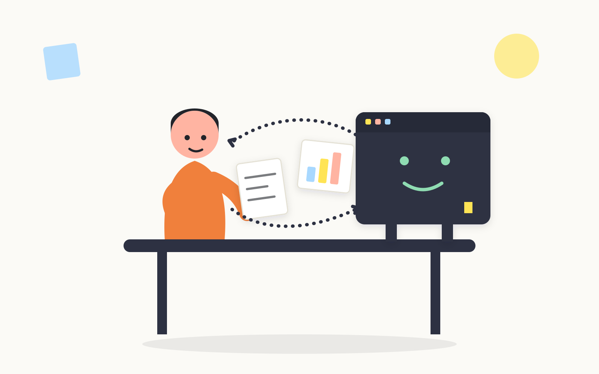
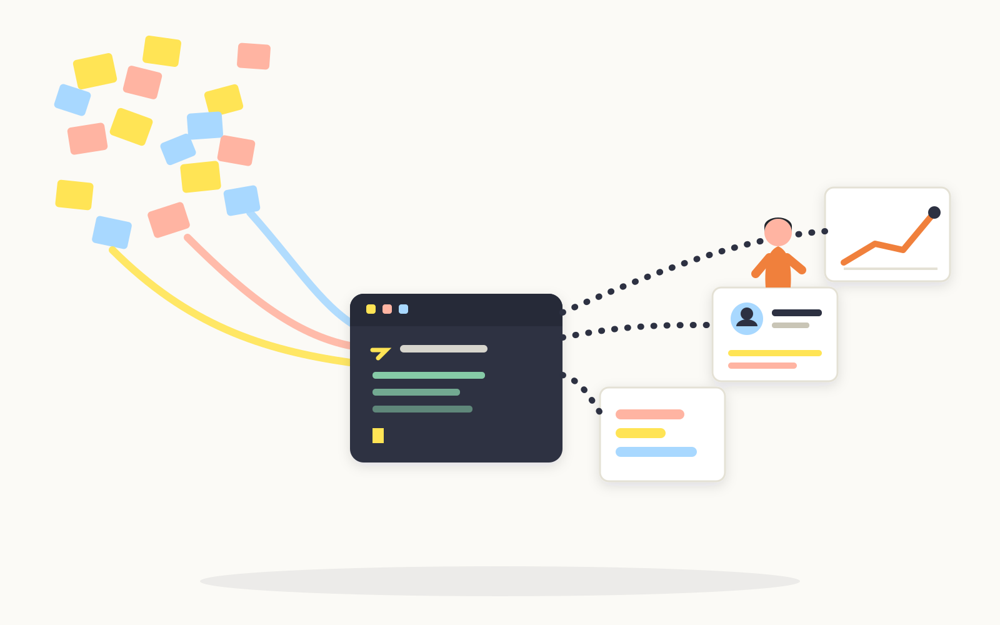
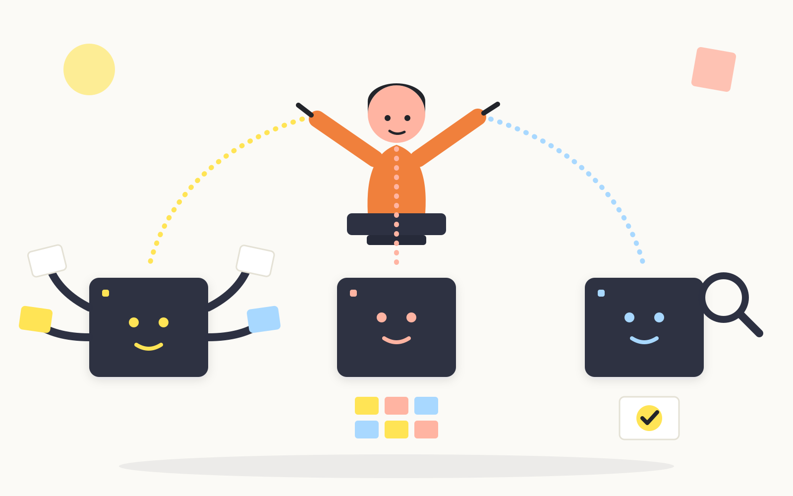

AI에게 말을 거는 것(L1)에서 출발해, 자기 실무 데이터를 다루고(L2), 마지막에는 반복 업무를 AI 팀으로 설계(L3)하는 데까지 갑니다. 목적지는 도구 사용이 아니라 업무 구조의 재설계입니다.

Claude Code와 첫 대화를 나누고, 하네스를 설치해 그날 바로 첫 에이전트 팀을 구성해 본다.

자기 서비스의 진짜 데이터(VoC·인터뷰)로 분석 팀을 구성·실행하고, 검증 담당의 결과를 확인한다.

MVP 팀으로 시제품을 만들고, 자기 반복 업무를 역할 분해해 하네스로 직접 설계·진화시킨다.
각 90분, 핸즈온 50% 이상. 첫날 안에 첫 하네스를 구성하고, 마지막 모듈에서는 자기 반복 업무의 팀을 직접 설계합니다. 막히기 쉬운 곳마다 "이렇게 나오면 정상입니다" 안내가 있습니다.
Claude Code를 켜 파일을 다루고, revfactory/harness 플러그인을 설치한다.
⏱ 90분 02 L1자연어로 첫 하네스를 구성·실행하고, 팀에 검증 담당이 있는 구조를 이해한다.
⏱ 90분 03 L2자기 VoC 데이터로 분석 팀을 구성·실행하고 검증 결과를 사람이 확인한다.
⏱ 90분 04 L2두 하네스를 연결해 자기 인터뷰에서 페르소나·저니맵 초안까지 만든다.
⏱ 90분 05 L2구현·검수 팀을 구성해 자기 아이디어를 클릭 가능한 HTML MVP로 만든다.
⏱ 90분 06 L3반복 업무를 역할 분해·검증 단계로 직접 설계해 구성하고, 실행 결과로 진화시킨다.
⏱ 90분+과제모든 사례가 같은 뼈대를 따릅니다 — 하네스 설치 → "하네스 구성해줘"(팀 구성 프롬프트) → 팀 실행 → 피드백으로 팀 진화. 복사해 쓰는 구성 프롬프트와 "꼭 사람이 확인하세요" 체크 포함. 처음이라면 하네스 설치 (처음 한 번만, 2분)부터.
분기마다 인터뷰 녹취 더미를 인사이트로 종합할 때
리서치근거 검증 담당을 둔 팀으로 페르소나·저니맵을 만들 때
평가라운드마다 세션 노트를 이슈·심각도 리포트로 만들 때
CX분기마다 리뷰·CS 티켓에서 개선 기회를 뽑을 때
라이팅시안 생성과 톤 검수를 분리한 팀으로 돌릴 때
설계개편마다 진단→대안→평가를 반복할 때
리서치경쟁 서비스 여럿을 병렬 조사해 비교표로 만들 때
프로토타이핑구현·검수 팀을 부려 시제품을 반복 검증할 때
평가릴리스마다 화면 접근성을 점검할 때
시스템수십 개 컴포넌트에 같은 문서 형식을 적용할 때
이 프로그램이 약속하는 것을 미리 확인하세요. 아래는 전부 이 하네스가 실제로 만들어 낸 것들입니다 — 여러분이 교육에서 만들게 될 것과 같은 종류입니다.
코드 한 줄 없이 프롬프트로 만든 4화면 시제품. 지금 바로 클릭해 보세요.
교육 자료책상에 두고 보는 치트시트 — 터미널 여는 법부터 권한 창 대응까지 한 장.
워크시트3회차에서 자기 반복 업무를 AI 팀으로 분해할 때 쓰는 실제 양식.
실습 데이터첫 실습에서 AI에게 읽히는 리뷰 20건 — 다운로드해 그대로 따라 할 수 있습니다.
사례 실물프롬프트 원문과 기대 결과, 검증 체크까지 — 사례집의 대표 사례.
GitHub모든 교육 자료의 마크다운 원본과 빌드 과정을 공개합니다.